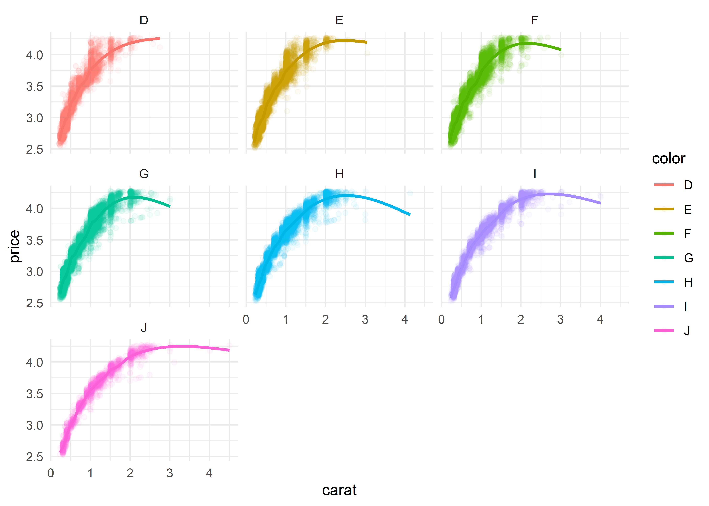
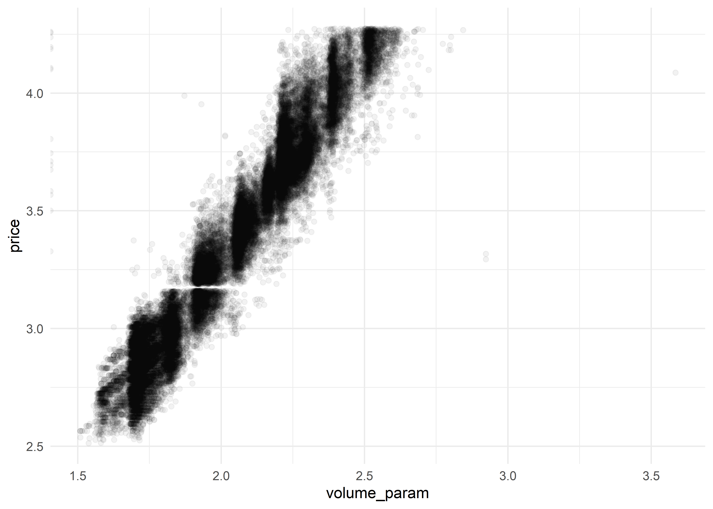
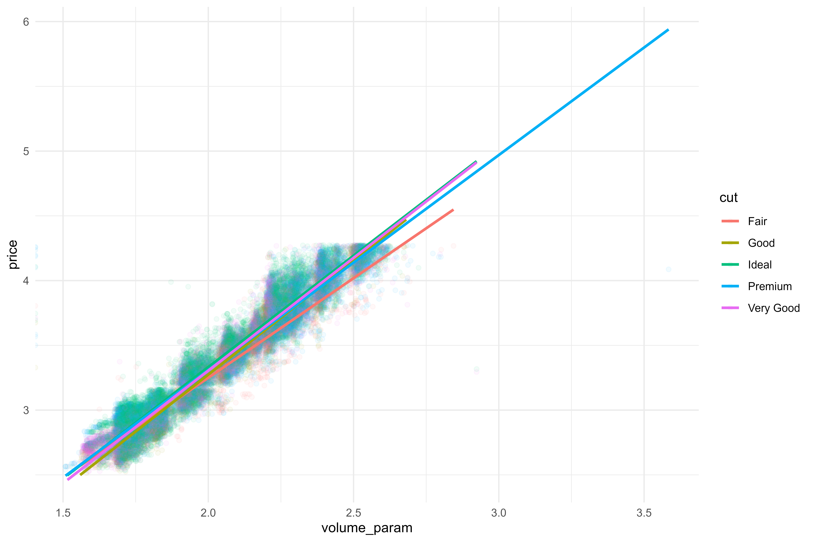
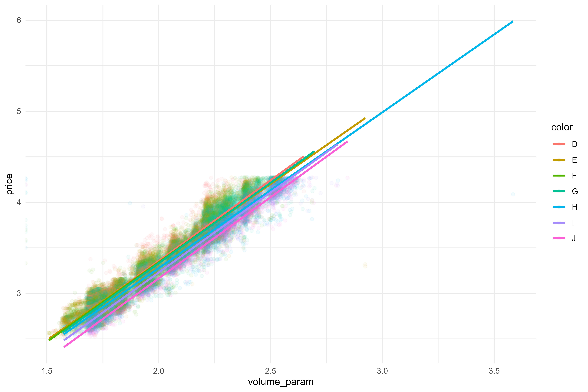
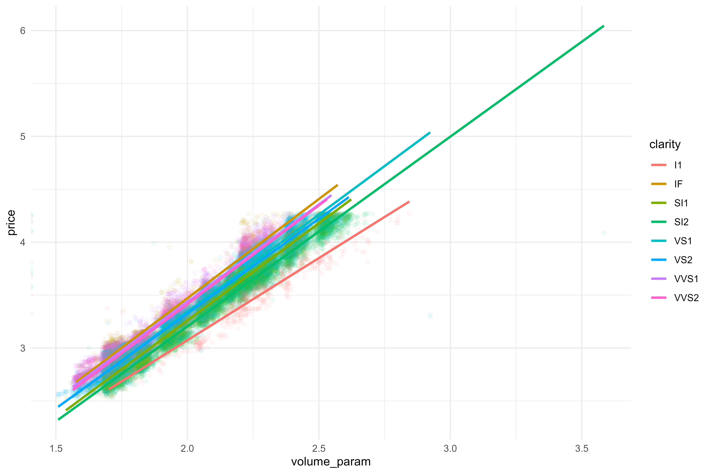

Are y’all ready for some charts?? This week, I did a bit of machine learning practice with the diamonds dataset. This dataset is interesting and good for practice for a few reasons:
there are lots of observations (50,000+);
it includes a mix of numeric and categorical variables;
there are some data oddities to deal with (log scales, interactions, non-linear relations)
I’ll be doing a bit of feature engineering prior to fitting an tuning a linear model that predicts the each diamond’s price with the glmnet package. This will give a good end-to-end glimpse into the data exploration and model fitting process! Before we get into that, let’s load some packages and get a preview of the dataset.
It looks like there may be a good opportunity to try out a few normalization and resampling techniques, but before we get into any of that, let’s build a baseline linear model.
Code
# splitsdiamonds_split <-initial_split(diamonds)diamonds_train <-training(diamonds_split)diamonds_test <-testing(diamonds_split)# resamples (don't want to use testing data!)diamonds_folds <-vfold_cv(diamonds_train)# model specmod01 <-linear_reg() %>%set_engine("lm")# reciperec01 <-recipe(price ~ ., data = diamonds_train) %>%step_dummy(all_nominal_predictors())# controlsctrl_preds <-control_resamples(save_pred =TRUE)# create a wfwf01 <-workflow() %>%add_model(mod01) %>%add_recipe(rec01)# parallel processingdoParallel::registerDoParallel()# fitrs01 <-fit_resamples( wf01, diamonds_folds,control = ctrl_preds )# metrics!collect_metrics(rs01)
# A tibble: 2 × 6
.metric .estimator mean n std_err .config
<chr> <chr> <dbl> <int> <dbl> <chr>
1 rmse standard 1135. 10 8.10 Preprocessor1_Model1
2 rsq standard 0.919 10 0.00129 Preprocessor1_Model1
And right off the bat, we can see a fairly high value for rsq! However, rsq doesn’t tell the whole story, so we should check our predictions and residuals plots.
This is definitely not what we want to see! It looks like there’s an odd curve/structure to the graph and we’re actually predicting quite a few negative values. The residuals plot doesn’t look too great either.
What we’d like to see is a 0-correlation plot with errors normally distributed; what we’re seeing instead, however, is a ton of structure.
That being said, that’s okay! we expected this first pass to be pretty rough! And the price is clearly on a log-10 scale. To make apples-apples comparisons with models going forward, I’ll retrain this basic linear model to predict the log10(price). This’ll involve a bit of data re-manipulation!
Code
# log transform pricediamonds_model <- diamonds %>%mutate(price =log10(price),across(cut:clarity, as.character))# bad practice copy + paste lol# splitsset.seed(999)diamonds_split <-initial_split(diamonds_model)diamonds_train <-training(diamonds_split)diamonds_test <-testing(diamonds_split)# resamples (don't want to use testing data!)set.seed(888)diamonds_folds <-vfold_cv(diamonds_train)# model specmod01 <-linear_reg() %>%set_engine("lm")# reciperec01 <-recipe(price ~ ., data = diamonds_train) %>%step_dummy(all_nominal_predictors())# controlsctrl_preds <-control_resamples(save_pred =TRUE)# create a wfwf01 <-workflow() %>%add_model(mod01) %>%add_recipe(rec01)# parallel processingdoParallel::registerDoParallel()# fitset.seed(777)rs01 <-fit_resamples( wf01, diamonds_folds,control = ctrl_preds )# metrics!collect_metrics(rs01)
# A tibble: 2 × 6
.metric .estimator mean n std_err .config
<chr> <chr> <dbl> <int> <dbl> <chr>
1 rmse standard 0.0793 10 0.00557 Preprocessor1_Model1
2 rsq standard 0.966 10 0.00494 Preprocessor1_Model1
And wow, that one transformation increased our rsq to 0.96! Again, that’s not the whole story, and we’re going to be evaluating models based on the rmse. Let’s look at how our prediction map has updated:
This is a good, but definitely improvable, starting point. We can likely decrease our overall error with a bit of feature engineering and drop unimportant features by tuning a regularized model. There are some oddities in this initial model that will need to be improved upon; for one, we can definitively say that the carat feature ought to be positively associated with price
Another few things that are interesting to note in this plot! It looks like there are clusterings of carat ratings around round-ish numbers. My hypothesis here is that carat ratings tend to get rounded up to the next size. There’s also a clear abscence of diamonds priced at $1,500 (~3.17 on the log10 scale). I suppose there is some industry-specific reason to avoid a diamond price of $,1500?
How to address all these things? With some feature engineering! Firstly, let’s add some recipe steps to balance classes & normalize continuous variables.
But before I get into that, I’ll save the resample metrics so that we can compare models!
# A tibble: 2 × 7
.metric .estimator mean n std_err .config model
<chr> <chr> <dbl> <int> <dbl> <chr> <chr>
1 rmse standard 0.0793 10 0.00557 Preprocessor1_Model1 model01
2 rsq standard 0.966 10 0.00494 Preprocessor1_Model1 model01
Code
# spec will be the same as model01mod02 <- mod01# recipe!rec02 <-recipe(price ~ ., data = diamonds_train) %>%step_other(cut, color, clarity) %>%step_dummy(all_nominal_predictors(), -cut) %>%# use smote resampling to balance classes themis::step_smote(cut) %>%# normalize continuous vars bestNormalize::step_best_normalize(carat, depth, table, x, y, z)
Let’s bake our recipe to verify that everything looks up-to-snuff in the preprocessed dataset.
Everything looks alright with the exception of the table predictor. I wonder if there are a lot of repeated values in the table variable - that may be why we’re seeing a “chunky” histogram. Let’s check
Ooh - okay yeah that’s definitely the issue! I’m not quite sure how to deal with it, so we’re just going to ignore for now! Let’s add a new model & see how it compares against the baseline transformed model.
Code
wf02 <-workflow() %>%add_model(mod02) %>%add_recipe(rec02)# stop parallel to avoid error!# need to replace with PSOCK clusters# see github issue here: https://github.com/tidymodels/recipes/issues/847foreach::registerDoSEQ()set.seed(666) # spoopyrs02 <-fit_resamples( wf02, diamonds_folds,control = ctrl_preds )collect_metrics(rs02)
# A tibble: 2 × 6
.metric .estimator mean n std_err .config
<chr> <chr> <dbl> <int> <dbl> <chr>
1 rmse standard 0.115 10 0.00143 Preprocessor1_Model1
2 rsq standard 0.932 10 0.00161 Preprocessor1_Model1
Oof - that’s actually slightly worse than our baseline model!
Yeah that’s fairly wonky! I’m wondering if it’s due to the SMOTE upsampling method we introduced? To counteract, I’ll build & train new models after each set of recipe steps (e.g., resampling, normalizing, interactions) to buil up a better performing model one step at a time.
# same model specmod03 <- mod02# rebuild rec+wf & retrainrec03 <-recipe(price ~ ., data = diamonds_train) %>%step_other(cut, color, clarity) %>%step_dummy(all_nominal_predictors(), -cut) %>% themis::step_smote(cut)wf03 <-workflow() %>%add_model(mod03) %>%add_recipe(rec03)# do parallleldoParallel::registerDoParallel()# refit!set.seed(123)rs03 <-fit_resamples( wf03, diamonds_folds,control = ctrl_preds )collect_metrics(rs03)
# A tibble: 2 × 6
.metric .estimator mean n std_err .config
<chr> <chr> <dbl> <int> <dbl> <chr>
1 rmse standard 0.0918 10 0.00502 Preprocessor1_Model1
2 rsq standard 0.956 10 0.00502 Preprocessor1_Model1
Interesting! Improved relative to rs02, but still not as good as our first model! Let’s try using step_downsample() to balance classes & see how we fare.
Code
# cleanup some large-ish items eating up memoryrm(mod01, mod02, rec01, rec02, wf01, wf02, rs01, rs02)# save metricsmetrics <- metrics %>%bind_rows(collect_metrics(rs03) %>%mutate(model ="model03"))# new modmod04 <- mod03# new recrec04 <-recipe(price ~ ., data = diamonds_train) %>%step_other(cut, color, clarity) %>%step_dummy(all_nominal_predictors(), -cut) %>% themis::step_downsample(cut)wf04 <-workflow() %>%add_model(mod04) %>%add_recipe(rec04) set.seed(456) rs04 <-fit_resamples( wf04, diamonds_folds,control = ctrl_preds )collect_metrics(rs04)
# A tibble: 2 × 6
.metric .estimator mean n std_err .config
<chr> <chr> <dbl> <int> <dbl> <chr>
1 rmse standard 0.113 10 0.0120 Preprocessor1_Model1
2 rsq standard 0.930 10 0.0153 Preprocessor1_Model1
Wow - still a bit worse! I’ll try upsampling & if there is no improvement, we’ll move on without resampling!
# A tibble: 2 × 6
.metric .estimator mean n std_err .config
<chr> <chr> <dbl> <int> <dbl> <chr>
1 rmse standard 0.127 10 0.00115 Preprocessor1_Model1
2 rsq standard 0.916 10 0.00136 Preprocessor1_Model1
Well - that was quite a bit for no improvement! I guess that normalizing the continuous vars in this case isn’t helping. Moving on to adding some interactions - first let’s explore potential interactions a bit.
Hmmmm, 10 might be too many. It looks lie we’ll just lose a bit of confidence for the Premium & Very Good diamonds at higher carats. Relative to the total number, I’m not too concerned.
7 terms feels like the best we’re going to do here - I think this is tuneable, but we’ll leave as is (now & in the final model).
Next, we’ll look at creating interactions between the color and carat variables:
Code
diamonds_train %>%ggplot(aes(x = carat, y = price,color = color)) +geom_point(alpha =0.05) +geom_smooth(method = lm, formula = y ~ns(x, df =15),se =FALSE) +facet_wrap(~color)

Adding interactive spline terms with df of 15 seems to add some useful information!
We have three shape parameters, x, y, and z - I wonder if creating a stand-in for volume by multiplying them all together will provide any useful information?
Code
diamonds_train %>%mutate(volume_param = x * y * z) %>%ggplot(aes(x = volume_param,y = price)) +geom_point(alpha =0.05)
Ooh, looks like we’re getting some good info here, but we may want to use log10 to scale this back.
Code
diamonds_train %>%mutate(volume_param =log10(x * y * z)) %>%ggplot(aes(x = volume_param, y = price)) +geom_point(alpha =0.05)

Let’s see if this ought to interact with any other paramaters:
Code
diamonds_train %>%mutate(volume_param =log10(x * y * z)) %>%ggplot(aes(x = volume_param, y = price,color = cut)) +geom_point(alpha =0.05) +geom_smooth(method ="lm", se =FALSE)

Code
diamonds_train %>%mutate(volume_param =log10(x * y * z)) %>%ggplot(aes(x = volume_param, y = price,color = color)) +geom_point(alpha =0.05) +geom_smooth(method ="lm", se =FALSE)

Code
diamonds_train %>%mutate(volume_param =log10(x * y * z)) %>%ggplot(aes(x = volume_param, y = price,color = clarity)) +geom_point(alpha =0.05) +geom_smooth(method ="lm", se =FALSE)

Hmm, it doesn’t really look like we’re capturing too great of interactions, so I’ll leave out for now. It looks like the size of the rock is more important than anything else! I could continue to dig further, but I’ll stop there. I’m likely getting diminishing returns, & I’d like to get back into modeling!
Recipe
Inputs:
role #variables
outcome 1
predictor 9
Operations:
Collapsing factor levels for cut, color, clarity
Dummy variables from all_nominal_predictors()
Interactions with carat:starts_with("cut_")
Interactions with carat:starts_with("color_")
Variable mutation for c(x, y, z)
Variable mutation for log10(x * y * z)
Natural splines on starts_with("carat_x_cut")
Natural splines on starts_with("carat_x_color")
That’s pretty good! We do have one value that’s way off, so let’s see if regulization can help. This will require setting a new baseline model, and we’ll tune our way to the best regularizaion parameters.
As expected, most of our terms get regularized away, which is what we want! Our chart is a little unreadable; let’s plot just the most important variables in a few ways: